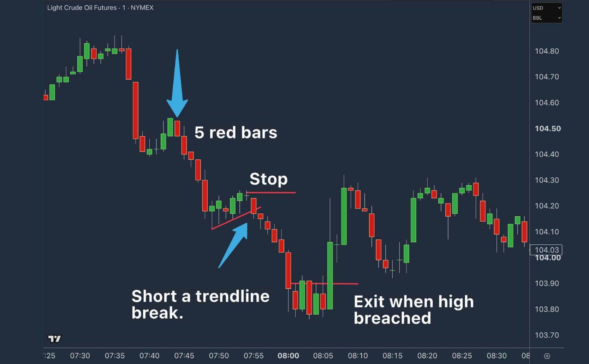

Hope you're having a good trading week so far… what a mega Nasdaq move yesterday!
Been a while since we had a monster like that.
And you know, sometimes the simplest patterns are the most effective. The old “KISS” is legit good advice… particularly in trading.
So, in tonight's Pepperstone webinar, we're looking at one called the ABC Scalp…It's not advanced, it's not new, but it's a nice, clear way of triggering into a trade when the context is right.
THE ABC SCALP

The basic structure is actually relatively simple:
- A strong drive in one direction.
- A controlled pullback.
- Then a momentum signal that suggests we may be ready for another leg.
Nothing groundbreaking there, Mark, you might say!
But the interesting part is what's happening underneath the candles.
Why did price drive so cleanly in the first place?
Why can the sellers only manage a relatively weak pullback?
And what does it tell us when buyers step back in and break that pullback structure?
That's where the pattern starts to become useful.
Because, as always, context matters; it does the heavy lifting for the trade.
The same ABC pattern appearing at the right location, with momentum and a reason for the market to move, is very different from one appearing randomly in the middle of nowhere.
Anyway, tonight I'll go through:
- The ABC structure to look for
- What's happening from a supply/demand perspective
- How to use the trendline break as the trigger
- The contexts where it becomes more interesting
- And plenty of chart examples so you can see the good, bad, and ugly versions
Simple pattern? Yup.
But potentially a very useful trigger to have in the playbook.
PS: I'm hosting this one live from my hotel room in Dubai, which may run like clockwork or be a complete disaster… come find out 😁